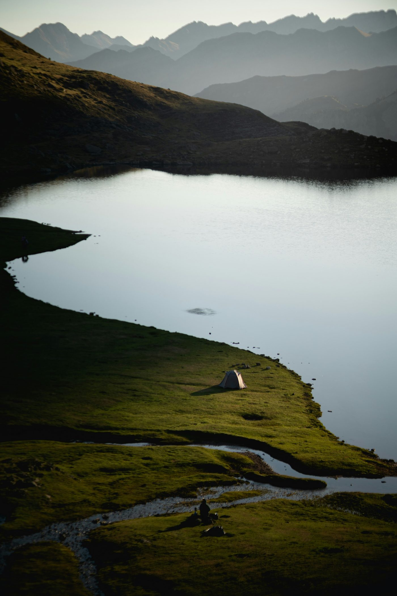

La boucle du Turon de Néouvielle, jusqu'au sommet à 3 029 m, avec une nuit en bivouac au Lac Bleu — entre amis du Tarn.
Notre objectif : partir ensemble gravir un sommet des Pyrénées, marcher jusqu'au bivouac et profiter d'une soirée loin du quotidien.
Turon de Néouvielle
3 029 m d'altitude
22 km en boucle
1 536 m de dénivelé positif
Une nuit au Lac Bleu
Repas collectif et coucher de soleil
Une aventure organisée ensemble
selon les disponibilités du groupe

Choisis simplement les week-ends où tu es disponible. Le groupe décidera ensuite de la meilleure date.
🗳️ Participer au choix de la date